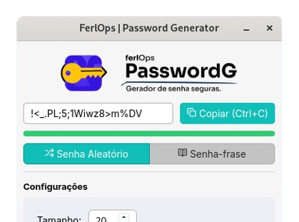

FerlOps Password Generator 1.1
crie senhas fortes e senhas-frase complexas de forma 100% offline.
Com uma interface intuitiva baseada em CSPRNG (Gerador de Números Aleatório Criptograficamente Seguro), feita para quem valoriza a privacidade.
Gere senhas fortes e senhas-frase seguras, offline e de codigo-aberto.

crie senhas fortes e senhas-frase complexas de forma 100% offline.
Com uma interface intuitiva baseada em CSPRNG (Gerador de Números Aleatório Criptograficamente Seguro), feita para quem valoriza a privacidade.
Confira algumas perguntas que você possa ter ao utilizar nosso software.
Não. O FerlOps Password Generator funciona 100% offline. Todo o processo de geração das senhas ocorre localmente no seu computador, o que garante que nenhuma informação seja transmitida pela rede, eliminando qualquer risco de interceptação.
Como um projeto de codigo-aberto, o codigo-fonte do PasswordG é transparente. Utilizamos algoritmos de geração de números aleatórios criptograficamente seguros (CSPRNG), que garantem que as senhas geradas tenham alta entropia e sejam impossiveis de prever.
A entropia de senha refere-se ao quão imprevisivel sua senha ou frase é, medida em bits. Normalmente quanto mais bits de entropia, mais complexa é a senha e mais dificil é quebrá-la por meio de ataques de força bruta.
Os atacantes de força bruta usam o métodos de tentativa e erro para adivinhar conbinações de caracteres em credenciais de login, senhas e dados de criptografia.
Por exemplo, muitos hackers usam scripts e maquinas complexas para automatizar milhares de tentativas de senhas em poucos minutos. Em um dos casos mais impressionantes, pesquisadores processaram até 350 bilhoes de tentativas de senha por segundo. (artigo em inglês)
Sim. O PasswordG é ideal para ambientes corporativos que exigem rigoroso controle de segurança. Por funcionar offline garante que nada saia do computador.
Não. O PasswordG não possui banco de dados local para armazenamento de senha, nem arquivos de log que registrem o que foi gerado. A senha gerada em memória volatil e assim que você copia ou fecha o aplicativo, ela é descartada do seu sistema. Ao copiar pelo botão na interface após 3 segundos ela é apagada da área de transferencia.
O PasswordG possui suporte nativo para Windows em breve para Linux e macOS, mantendo a mesma experiência de uso e nivel de segurança, independentemente do sistema escolhiido.
Encontrou algum comportamento inesperado? Ajude a FerlOps a melhorar a segurança e a estabilidade da ferramenta relatando o problema em nosso repositório no GitHub.